Diet Calculators
1. BMI Calculator
2. Daily Calorie Needs (Mifflin-St Jeor)
3. Macro Split Calculator
4. Ideal Weight Calculator
5. Meal-Plan Calorie Planner
Find a Diet Plan That Fits Your Life
Start with the calculators above, then read the guides below — practical, evidence-based diet advice for the USA.
All 20 Diet Guides
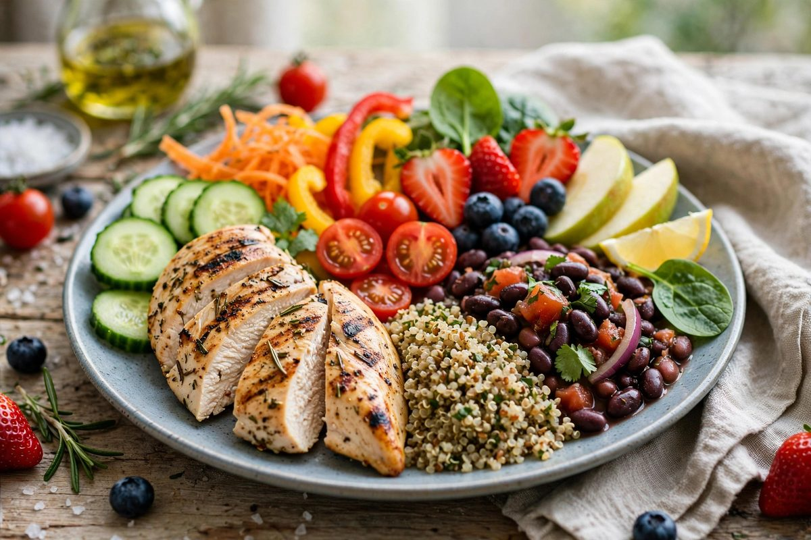
DASH Diet
The DASH diet was designed to lower blood pressure, and it works by filling your plate with vegetables, fruit, whole grains and low-fat dairy. A longer read with extra tips and serving ideas.
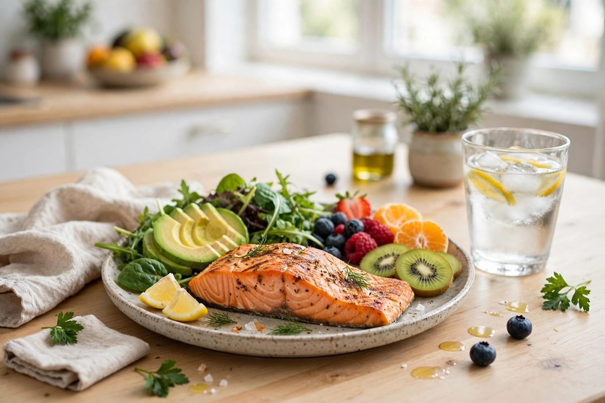
Intermittent Fasting
Intermittent fasting is an eating pattern that cycles between eating and fasting windows, and many people in the USA use the 16:8 method.
Portion Control
Portion control is the simplest weight tool there is: it lets you keep eating the foods you like, in amounts that match what your body actually needs.
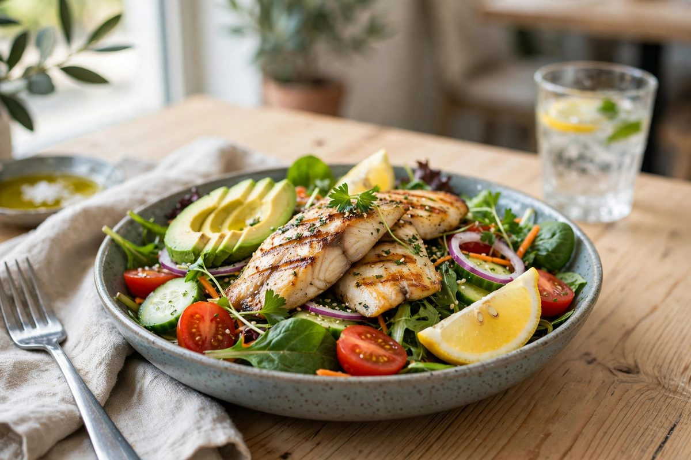
Eating Out Healthy
Eating out in the USA does not have to undo your diet. With a few ordering habits you can enjoy restaurants and still eat well. A longer read with extra tips and serving ideas.
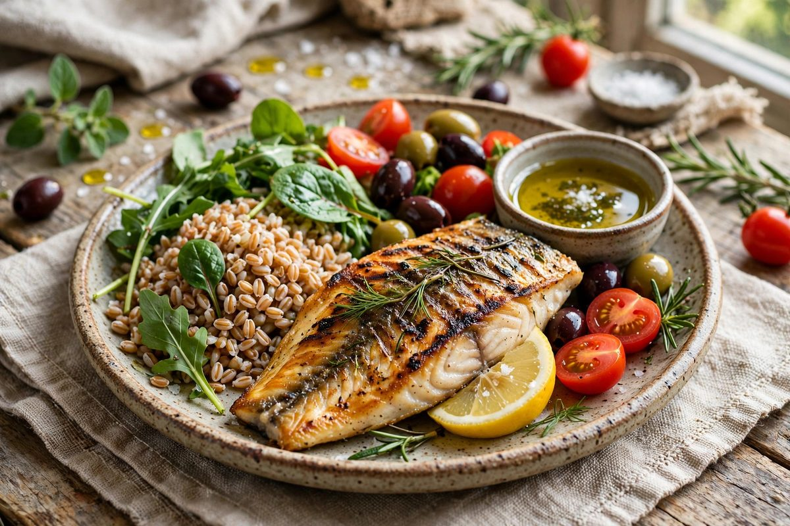
Mediterranean Diet in the USA
The Mediterranean diet adapts easily to American supermarkets: olive oil, fish, beans, vegetables and whole grains are all easy to find here.
Low-Carb Basics
A low-carb diet cuts back on bread, pasta, rice and sugar, and replaces them with vegetables, protein and healthy fats, which helps many people feel fuller.
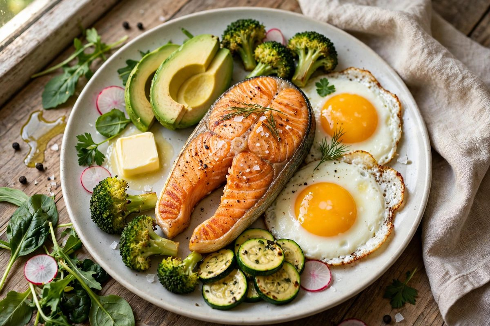
Keto in the USA
Keto in the USA is easier than it looks: American stores stock plenty of low-carb foods, from eggs and cheese to cauliflower rice and lettuce wraps. A longer read with extra tips and serving ideas.
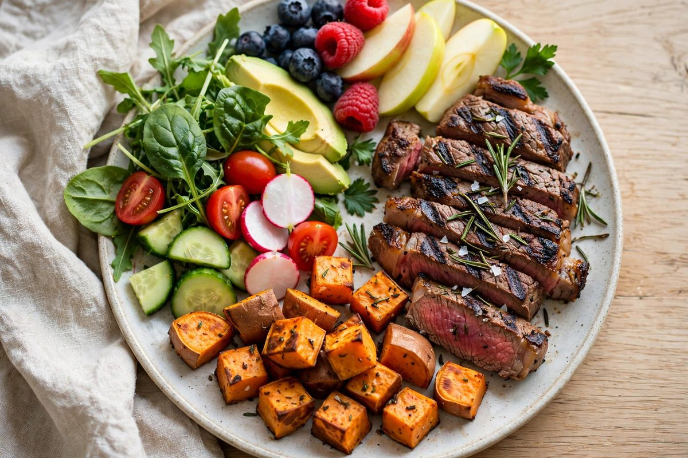
Whole30
Whole30 is a 30-day reset that removes sugar, alcohol, grains, legumes, dairy and additives, then reintroduces foods one group at a time.
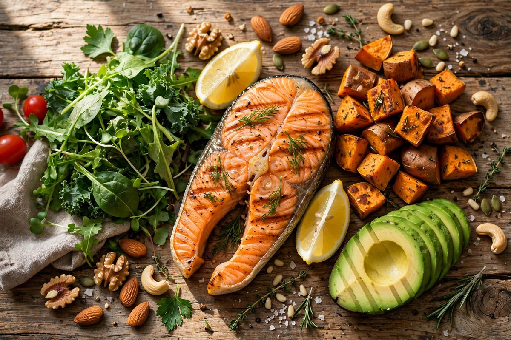
Paleo Diet
The paleo diet focuses on foods our ancestors could hunt or gather: meat, fish, eggs, vegetables, fruit, nuts and seeds, with no grains or dairy.
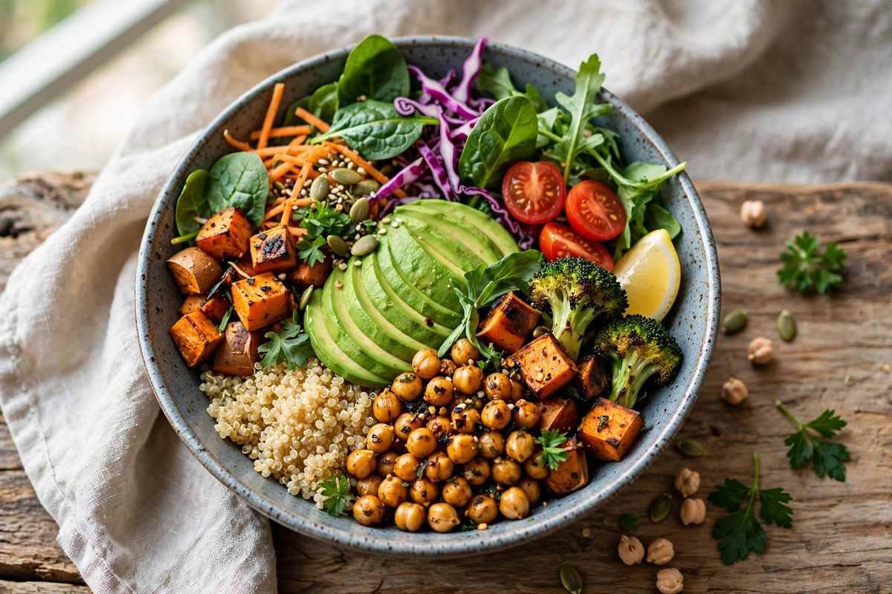
Vegetarian Diet USA
A vegetarian diet in the USA is well supported: supermarkets carry tofu, tempeh, beans, lentils and fortified plant milks in almost every town. A longer read with extra tips and serving ideas.

High-Protein Diet
A high-protein diet helps many Americans stay full and protect muscle while losing weight, but the protein still needs to come from good sources.
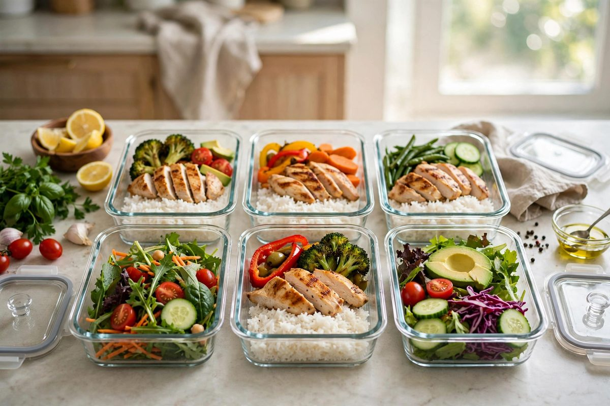
Meal Prep Basics
Meal prep turns one focused cooking session into a week of healthy lunches and dinners, and it is the single best habit for eating well on a busy schedule.
Grocery Shopping Guide
A good grocery trip starts before you leave home: a list, a plan for the week, and a route that keeps you in the fresh-food aisles. A longer read with extra tips and serving ideas.
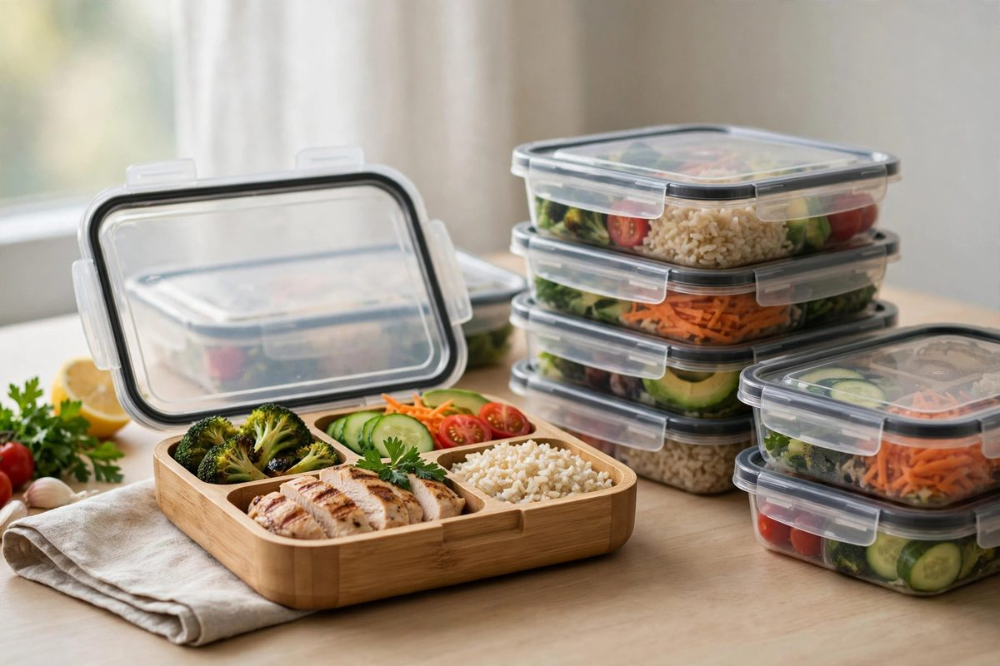
Diet for Busy People
A diet for busy people has to work on the worst day, not just the best one, so it is built on quick foods, batch cooking and smart takeaway choices.
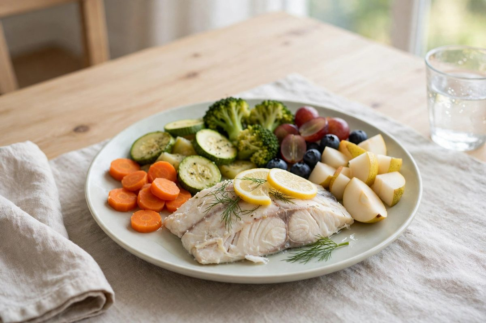
Diet for Seniors
As we age, our bodies need more protein and calcium but fewer calories, so a senior diet is about nutrient density: more nutrition in every bite.
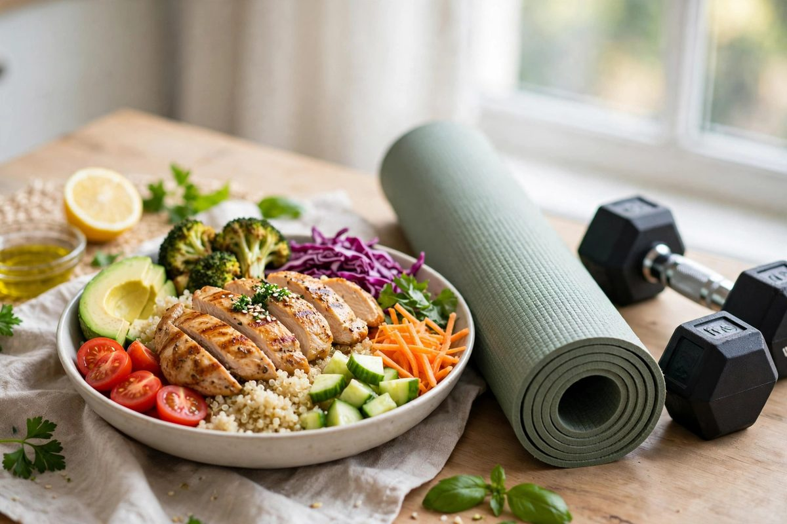
Diet and Exercise
Diet and exercise work as a team: food provides the fuel and the building blocks, and exercise decides how your body uses them. A longer read with extra tips and serving ideas.
Sugar Reduction
Cutting back on sugar is one of the fastest ways to improve a diet, and most of the sugar Americans eat comes from drinks and processed foods.
Healthy Snacks USA
Healthy snacks in the USA are easy once you know what to look for: nuts, fruit, yogurt, hummus and popcorn are all widely available and filling.
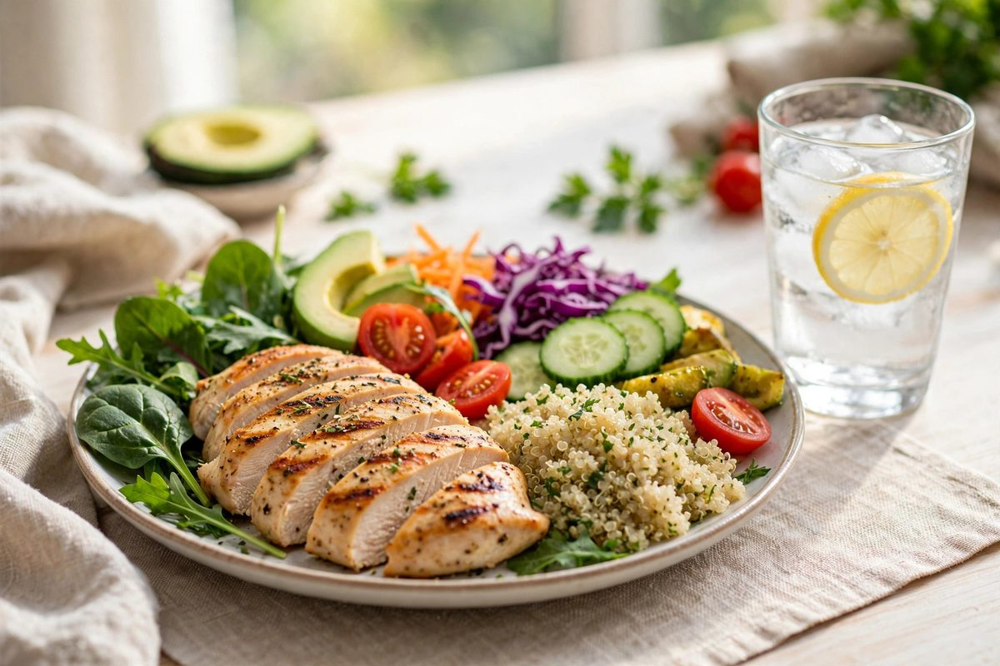
Weight Maintenance
Keeping weight off is a different skill from losing it, and it depends on habits you can live with for years, not on willpower alone. A longer read with extra tips and serving ideas.
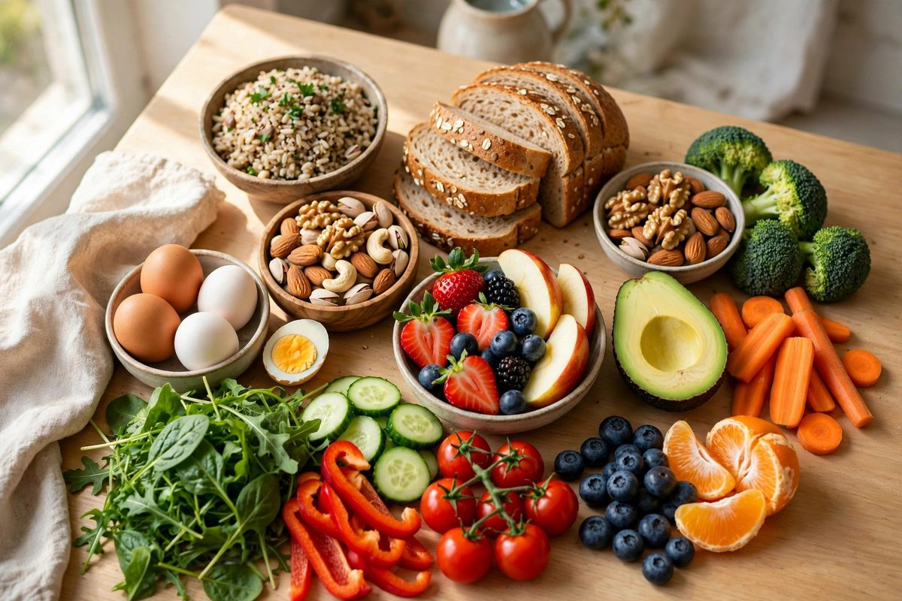
Diet Myths Debunked
Diet advice in the USA is full of myths that sound convincing but do not hold up, from detox teas to the idea that carbs are the enemy.